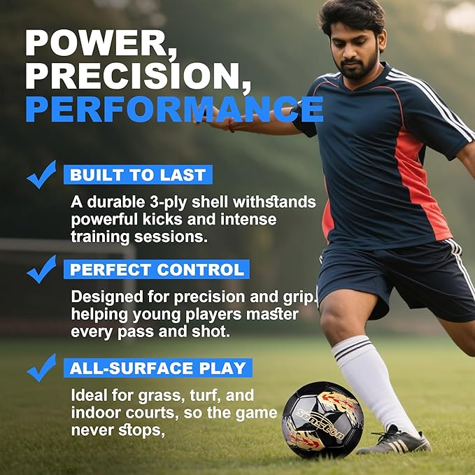

L'Oreal Paris Glycolic Bright Daily Foaming Cleanser
Daily foam face wash with glycolic acid that deeply cleanses, exfoliates and boosts skin glow. Suitable for all skin types.
View on AmazonPremium Products for Modern Lifestyle
Daily foam face wash with glycolic acid that deeply cleanses, exfoliates and boosts skin glow. Suitable for all skin types.
View on Amazon
Material typeSynthetic Closure typeSlip On Heel typeFlat Water resistance levelNot Water Resistant StyleCasual Strap typeThong
View on Amazon
Standard Size 5 Match Ball – Ready for the Field]:This is the official Size 5 football (68-70cm), the standard for players aged 12 and above. Whether it’s a competitive tournament or a casual training session, you get the same regulation size and weight you expect for consistent play
View on Amazon